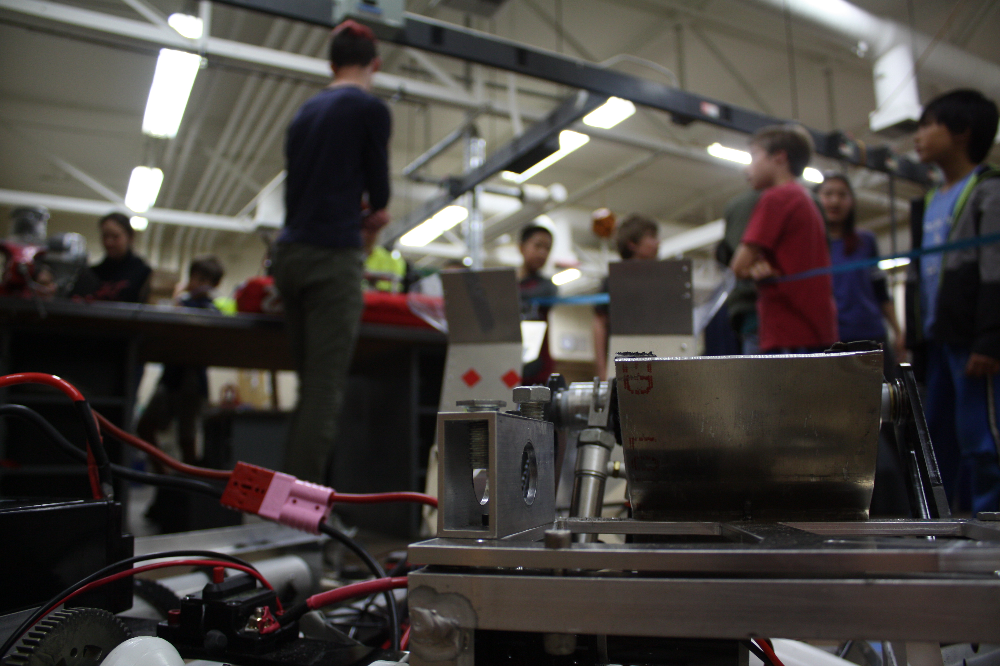

Come join the Gunn HS Robotics Team this summer to enjoy a thrilling and valuable robotics experience! Campers will collaborate to build and code a fully-functioning VEX IQ robot to complete and complete challenges while learning the fundamental skills for being an engineer.
When and where is it?The summer camp will be held from 8:30am to 3pm on June 11-15, 2018, at the Gunn HS Robotics Lab (L-5) at Gunn High School.